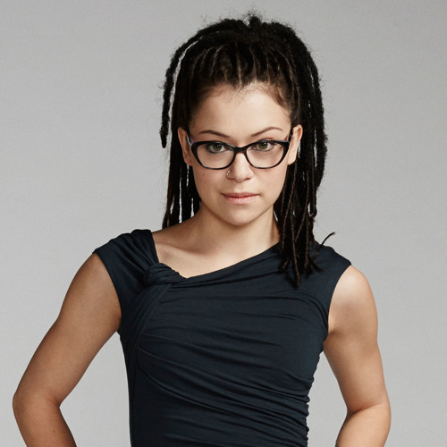
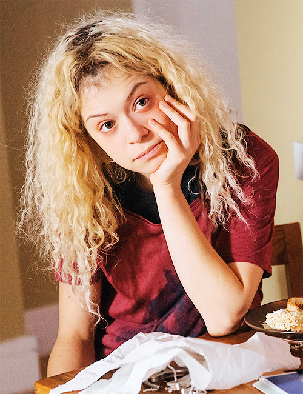
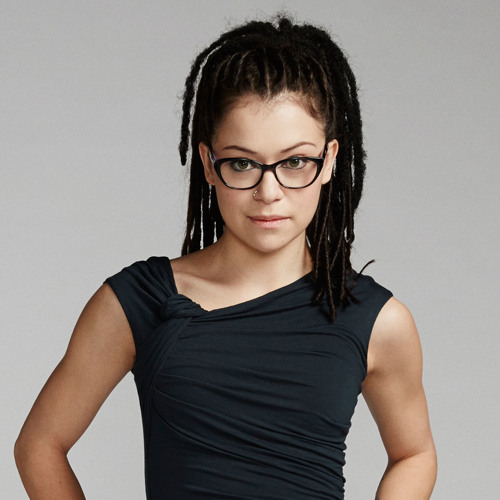
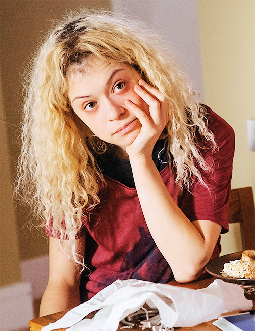

Primeira Temporada
Após presenciar o suicídio de uma desconhecida com a aparência idêntica à sua, Sarah Manning, uma órfã britânica com um histórico de delitos criminais, resolve furtar seus pertences e assumir sua identidade, se passando pela detetive Elizabeth Childs. As intenções iniciais de Sarah eram simplesmente tomar posse do dinheiro contido na conta bancária de Childs e usá-lo para começar uma nova vida com seu irmão adotivo Felix Dawkins e sua filha de 8 anos, Kira. Sarah usa a morte de Beth para despistar seu ex-namorado, um traficante de drogas chamado Victor, assumindo a identidade da policial e, consequentemente, acaba se envolvendo em uma conspiração envolvendo clonagem humana. Sarah então tem de ao mesmo tempo impedir que a polícia descubra sua identidade verdadeira e ajudar suas recém-descobertas irmãs clones a descobrir sua verdadeira origem, além de se proteger de um grupo de fanáticos religiosos que desejam destruí-las.[
Segunda Temporada
Sarah está correndo contra o tempo para encontrar a sua filha Kira que está desaparecida. Suas atitudes desencadeiam uma guerra com a sua pró-clone Rachel, dividindo e colocando em perigo todos os clones. Sarah começa a descobrir coisas de seu passado, enquanto os novos personagens surgem misteriosamente. Por fim, ela é sequestrada.
Terceira Temporada
A história volta de onde parou, com Sarah descobrindo sobre os clones masculinos, e seus mais novos perigos. Ela também tem que correr contra o tempo, para resgatar sua irmã Helena, das mãos do exercito. Sarah e suas irmãs se unem para se proteger, e acabam descobrindo mais sobre suas origens.
Quarta Temporada
Contém a descoberta do clone original, mãe da Sra. S. E assim, as clones vêem oportunidade de cura com as células dela. Com muitas indas e vindas, elas e a Dra. Duncan (que está viva) são enganadas pela até então, diretora da Neovolução e perdem todas as pesquisas feitas e um dos capangas da Neovolução mata a clone original, assim acabando de vez com as pesquisas. Cosima tem a brilhante idéia de como recomeçar as pesquisas, mas contando com a ajuda da Dra. Duncan e Rachel. Enquanto isso Donnie, marido de Alison, é preso por tráfico de drogas e os Hendrix são usados pela Neovolução para chegar até a Sarah e também descobrem uma nova clone a ''MK''.
Quinta Temporada
Nessa última temporada, Sarah está desesperada para tomar o controle de sua vida diante da ameaça da Neovolução. Logo, as protagonistas precisam encontrar as peças desaparecidas de uma latente conspiração – e, enfim, descobrir a verdade por trás da sua origem.
PERSONAGENS PRINCIPAIS
 


